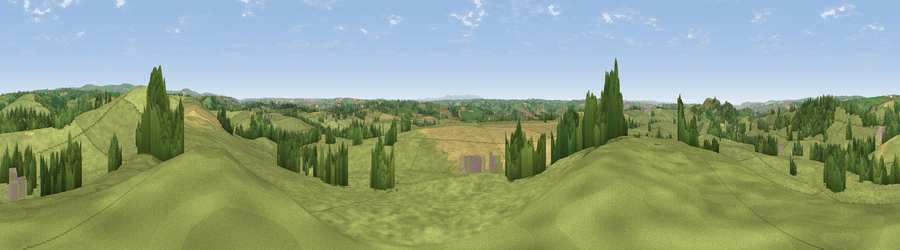

Viewpoint near Swimbridge
#13626 in England · top 27% of its area beats it · near SwimbridgeWhere it is
The exact computed spot (SS 63025 28425). Click the marker for map links.
The view, rendered

A 360° render of this exact spot computed from the terrain model, tree cover and land cover — summer colours, afternoon light, calibrated against photographs of famous viewpoints. Real trees, hedges and buildings will differ in detail.
The panorama
Grey silhouette: terrain skyline in each direction (720 bearings, Earth curvature and refraction included). Dashed green: skyline with trees (+15 m) and buildings (+8 m) as obstacles. Blue strip: how far the ground is visible on each bearing.
Where the view opens
Wedge length = distance to the farthest visible ground on that bearing (vegetation-aware). Rings at 10, 25 and 50 km.
What fills the view
78% grassland · 11% cropland · 10% woodland ·
Angular shares of the visible panorama (visual magnitude), not map area. Landscape diversity 0.31 (0–1 Shannon).
Key numbers
More beautiful places nearby
The staircase of upgrades: each row has a higher view potential than everything closer. Driving times are estimates from straight-line distance, calibrated against real road routing — check an actual route before setting out.
| Place | Direction | Drive | Score |
|---|---|---|---|
| Yollacombe Hill | ENE · 1 km | ~3 min | 70.2 |
| Viewpoint near Landkey | WNW · 4 km | ~9 min | 74.0 |
| Codden Hill | WNW · 5 km | ~11 min | 81.3 |
| Holdstone Hill | N · 19 km | ~33 min | 90.2 |
| The Knoll | ESE · 99 km | ~124 min | 91.0 |
51.03881, -3.95508 · source: screening · position refined by local search. Computed location — check access rights before visiting.